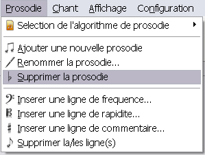

Pour supprimer une prosodie existante dans un projet SIVOX, il faut cliquer sur Prosodie > Supprimer la prosodie

Le logiciel supprime alors dans le projet SIVOX la prosodie courante en demandant une confirmation de suppression.